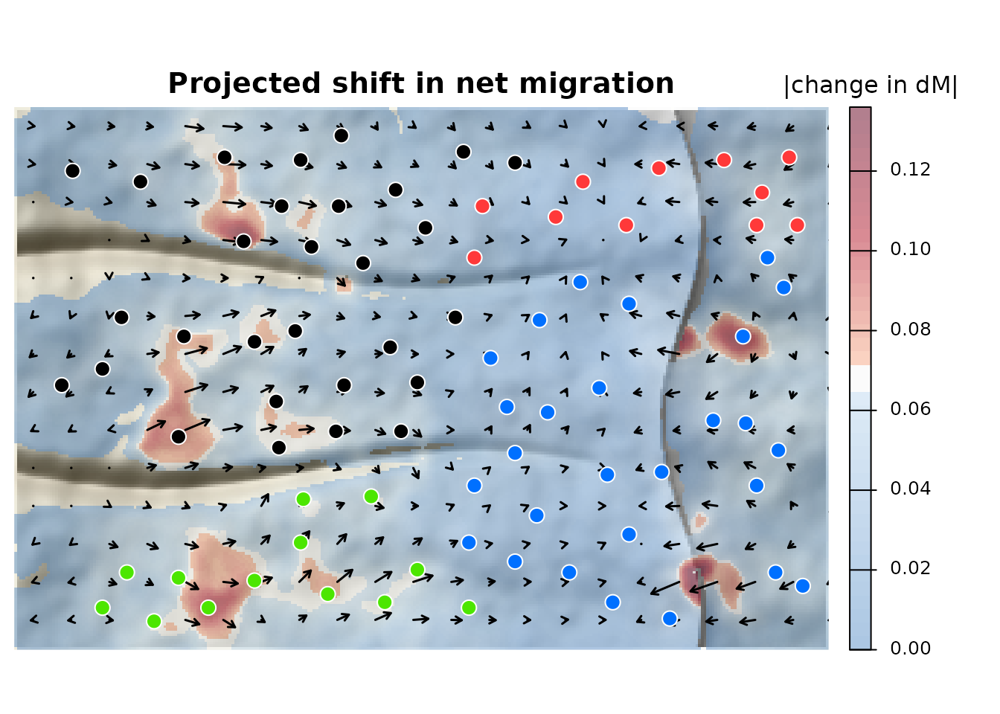

corridoR forecasts how genetic connectivity, and the net direction of migration, shift under climate change, following Maier et al. (2022, Heredity). This short version runs the workflow on part of the simulated example. The full tutorial covers every step in detail, including comparing path hypotheses and choosing a corridor width for each group of features.
The example is a simulated mountain range: 80 snowmelt meadows on a long western slope that rises to a crest, with a steep escarpment to the east and two canyons. Migrants favor wetter meadows, and warming dries the foothills the most.
1. Genetic distances. Read genotypes (STRUCTURE,
GENEPOP, VCF, GenAlEx, FSTAT, PLINK, or adegenet and
vcfR objects), then compute FST and δM, the net
direction of migration:
pc <- read_genotypes(ex$files$structure)
fst <- pairwise_fst(pc)
dM <- directional_gst(pc)$dM
gen <- pairwise_table(fst, dM)2. Paths. Least cost paths between nearby meadows:
xy <- st_coordinates(ex$sites); rownames(xy) <- ex$sites$site
pairs <- as.data.frame(t(combn(ex$sites$site, 2))); names(pairs) <- c("from", "to")
pairs <- pairs[sqrt(rowSums((xy[pairs$from, ] - xy[pairs$to, ])^2)) < 9000, ]
tr <- make_transition(ex$resistance, barrier = 1e6)
paths <- least_cost_paths(tr, ex$sites, pairs = pairs, dem = ex$dem)
nrow(paths)
#> [1] 2913. Corridors. Summarize present and future environment inside each least cost corridor, weighted by how likely a route through each cell is:
both <- c(ex$env, ex$env_future)
names(both) <- c(names(ex$env), paste0(names(ex$env), "_f"))
x <- corridor_extract(both, pairs, acc = ex$acc, q = 0.05, progress = FALSE)4 and 5. Models. Each pair is used in both directions, with the contrast between source and destination meadows and the lineage effect added. Then a Cubist model of δM:
vars <- names(ex$env)
now <- both_directions(cbind(x[, c("from", "to", vars)], path_length = paths$length))
future <- now
future[vars] <- both_directions(x[, c("from", "to", paste0(vars, "_f"))])[paste0(vars, "_f")]
now <- cbind(now, site_contrast(ex$sites, now, env = ex$env)[, -(1:2)])
future <- cbind(future, site_contrast(ex$sites, now, env = ex$env_future)[, -(1:2)])
lin <- st_drop_geometry(ex$sites)[, c("site", "lineage")]
now$LineageCross <- future$LineageCross <- lineage_cross(now$from, now$to, lin, ex$lineage_tmrca)
y <- gen$dM[match(paste(now$from, now$to), paste(gen$from, gen$to))]
groups <- list(climate = c("snowpack", "runoff", "summer_temp"),
climate.at = c("snowpack.at", "runoff.at", "summer_temp.at"))
m <- fit_connectivity(now, y, groups, committees = c(1, 20), neighbors = c(0, 5), folds = 5)
m
#> <corridor_model> Cubist, 20 committees, 5 neighbors
#> 14 features after PCA and VIF filtering; CV RMSE 0.04485, R2 0.485
#> most important: moisture.at (100), climate.at_PC2 (72), climate.at_PC1 (71), climate.at_PC3 (42), moisture (39)6. Forecast. Predict under warming and map the change onto the corridors:
change <- data.frame(from = now$from, to = now$to, value = predict(m, future) - predict(m, now))
shift <- map_pairwise(change, ex$acc, ex$sites, progress = FALSE)
lc <- c(North = "#ff3939", East = "#0070ff", West = "#000000", South = "#4ce600")
plot_shift(shift, dem = ex$dem, sites = ex$sites, col_sites = lc[ex$sites$lineage],
main = "Projected shift in net migration", legend_title = "|change in dM|")
Arrows show the net direction of change and red marks where it is largest: low meadows are pushed upslope toward the crest. With only nearby pairs this version is coarser than the full tutorial.
Citation
If you use corridoR, please cite both papers:
Maier PA, Vandergast AG, Ostoja SM, Aguilar A, Bohonak AJ (2022) Landscape genetics of a sub-alpine toad: climate change predicted to induce upward range shifts via asymmetrical migration corridors. Heredity 129:257-272. https://doi.org/10.1038/s41437-022-00561-x
Maier PA (2027) corridoR: An R package for forecasting genetic range shifts along migration corridors. Methods in Ecology and Evolution, in review.